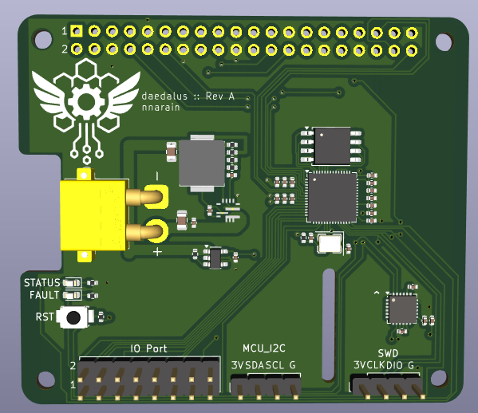

Daedalus is a Raspberry Pi add-on that aims to supply the necessary components for common robotics applications such as power distribution, IO, sensors and software defined embedded logic.
Features:
- Switch mode power supply (7V - 25V input, 5V @ 6A output)
- 3.3V linear regulator
- On board RP2040 co-processor
- MPU-6050 IMU
- 16 GPIO (8x Pi + 8x MCU)
Design
Daedalus is designed as a comprehensive Raspberry Pi add-on board for robotics applications.
Power Supply
The board features a switch mode power supply that can accept input voltages from 7V to 25V (suitable for 2S to 6S LiPo batteries) and provides a stable 5V output at up to 6A continuous current.
Additionally, a 3.3V linear regulator provides power for low-power components and ensures clean power for sensitive analog circuits.
Microcontroller
An onboard RP2040 co-processor provides additional GPIO and processing capabilities, complementing the Raspberry Pi’s capabilities.
Sensors
The board includes an MPU-6050 IMU (Inertial Measurement Unit) providing:
- 3-axis gyroscope
- 3-axis accelerometer
- Temperature sensor
GPIO
The board provides 16 GPIO pins total:
- 8 GPIO pins connected to the Raspberry Pi
- 8 GPIO pins connected to the RP2040 MCU
This allows for flexible interfacing with external sensors, actuators, and other peripherals commonly used in robotics applications.
Board
Board Renders
Schematic
You can also download the schematic PDF.
Interactive BOM
Check out the interactive BOM for component placement and part information.
Manufacturing Files
Download JLCPCB fabrication files for PCB manufacturing.
Appendix
Revision History
Rev A (Proof of Concept)
The current revision is a proof-of-concept that demonstrates the core functionality of the Daedalus add-on board.
Resources
License
This project is open source hardware. Please check the repository for specific license details.